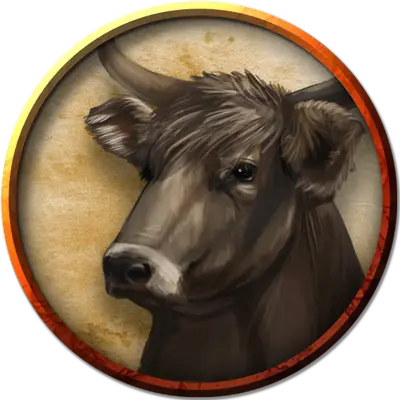

Вол
Ox
Большой Зверь, без мировоззрения

Класс Доспеха 10
Хиты 15 (2к10 + 4)
Скорость 30 футов
| мод | спас | ||
|---|---|---|---|
| СИЛ | 18 | +4 | +4 |
| ЛОВ | 10 | +0 | +0 |
| ТЕЛ | 14 | +2 | +2 |
| мод | спас | ||
|---|---|---|---|
| ИНТ | 2 | −4 | −4 |
| МДР | 10 | +0 | +0 |
| ХАР | 4 | −3 | −3 |
Чувства пассивное Восприятие 10
Опасность 1/4 (50 опыта)
Бонус мастерства +2
Среда обитания Луг
Особенности
Атака в броске. Если корова переместится как минимум на 20 футов по прямой к цели, а затем в том же ходу попадёт по ней атакой бодания, цель получает от атаки дополнительный колющий урон 7 (2к6).
Вьючное животное. Вол считается Огромным животным при определении его грузоподъемности.
Действия
Бодание. . Рукопашная атака оружием: +6 к попаданию, досягаемость 5 футов, одна цель. Попадание: Колющий урон 7 (1к6 + 4).
Описание
Вол, в основном, используется для тягловой работы, а не для мяса или молока.
См. дополнительно статью: "Бестиарий: Скот, крупный рогатый"